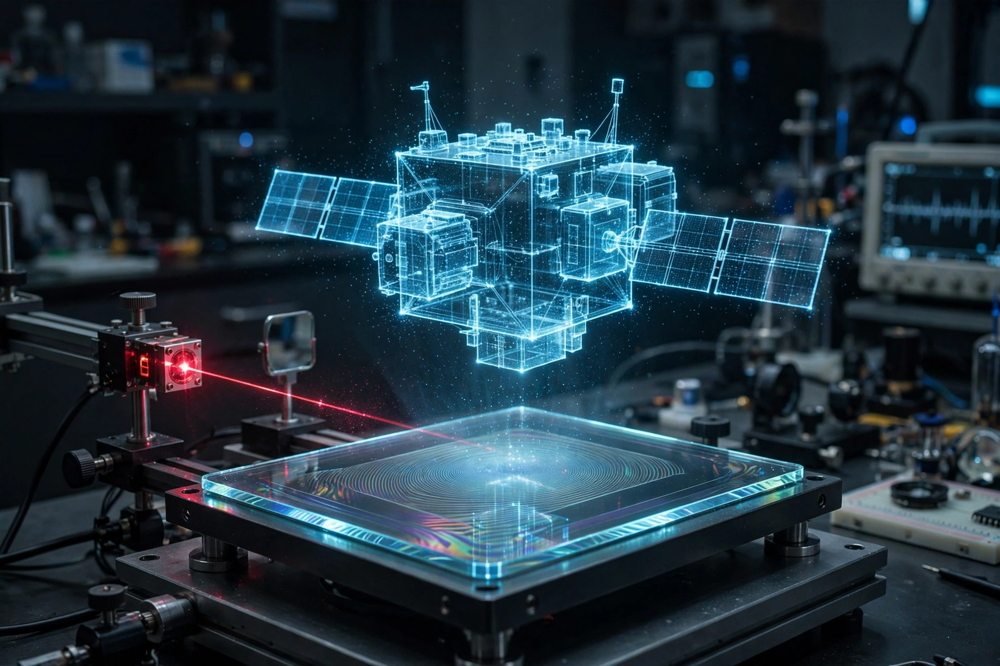

Holography
Holography is a technique that enables a wavefront to be recorded and later reconstructed. It is best known as a method of generating real three-dimensional images, but it also has a wide range of other applications. In principle, it is possible to make a hologram for any type of wave.
A hologram is a recording of an interference pattern that can reproduce a 3D light field using diffraction. In general usage, a hologram is a recording of any type of wavefront in the form of a physical structure that can reconstruct the wavefront by diffracting light into it.

| Holography | |
|---|---|
| Inventor | Dennis Gabor (1948) |
| Key development | Laser holography, Emmett Leith and Juris Upatnieks (1962) |
| Principle | Interference and diffraction of coherent light |
| Applications | Data storage, security features, art, interferometry, microscopy |
History
Holography was invented in 1948 by Hungarian-British physicist Dennis Gabor, who received the Nobel Prize in Physics in 1971 for the work. Gabor developed the theory while working to improve the resolution of electron microscopes. His original setup used filtered light from a mercury vapour lamp, and the resulting images suffered from twin-image problems.
The technique remained little more than a curiosity until the invention of the laser in 1960. In 1962, Emmett Leith and Juris Upatnieks at the University of Michigan produced the first practical laser transmission holograms of three-dimensional objects, using an off-axis reference beam that eliminated the twin-image problem. In the same period, Yuri Denisyuk in the Soviet Union developed reflection holograms that could be viewed in white light.
How it works
To record a hologram, coherent light — typically from a laser — is split into two beams. The object beam illuminates the subject and is scattered onto the recording medium, while the reference beam is directed onto the medium directly. The two beams interfere, creating an interference pattern of microscopic fringes that encodes both the amplitude and the phase of the light scattered from the object. Unlike an ordinary photograph, which records only intensity, the hologram records the complete wavefront.
When the developed hologram is illuminated by a beam similar to the original reference beam, the recorded fringe pattern diffracts the light and reconstructs the original wavefront, producing an image that appears fully three-dimensional: it exhibits parallax and depth cues just as the original object did.
Types of hologram
Transmission holograms are viewed by shining laser light through them, with the image appearing on the opposite side. Reflection holograms reflect ambient light from the front and can be viewed in ordinary white light; they are used on credit cards, banknotes, and product packaging as security features. Rainbow holograms, developed by Stephen Benton, sacrifice vertical parallax for bright white-light viewing and are the familiar embossed holograms found on passports and software packaging.
Applications
Beyond art and display, holography is used in holographic interferometry for non-destructive stress and vibration analysis, in microscopy, in data storage research, in scanners and optical elements (holographic optical elements), and in security printing. Holographic displays remain an active area of research, distinct from stereoscopic and autostereoscopic displays such as the "hologram" stage effects produced with Pepper's ghost techniques.